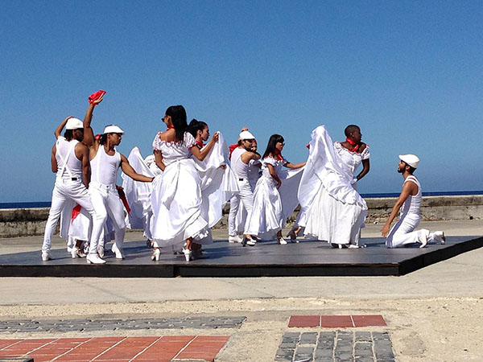
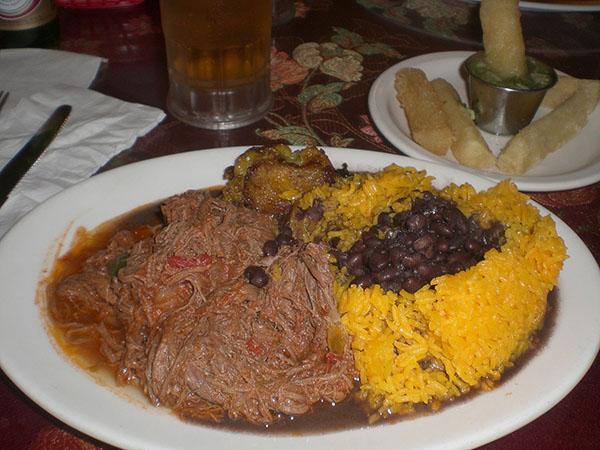
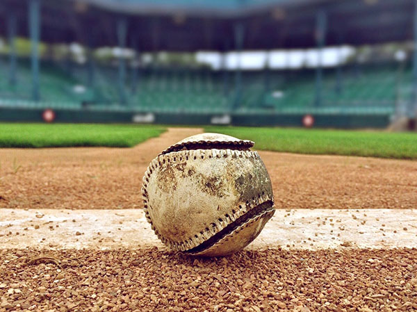

A Website by Christy Piña
In 1492, the Spanish colonized Cuba, but before they landed on Cuban territory, the island was inhabited by three different indigenous tribes: the Taíno, the Guanajatabey, and the Ciboney people. When the Spanish colonized Cuba, they ruled the island until 1898, when the Spanish ceded Puerto Rico, the Philippines and Guam to the United States. A few years later, Cuba gained its independence from the United States, though the U.S. still had the right to intervene in Cuban affairs, supervise its finances and foreign relations.
In 1959, the Communist Party took over Cuba, after sending former president, Fulgencio Batista, into exile. Today, the Communist Party is still in charge. Though the U.S. saw the revolution as a positive thing at first, Fidel Castro's installation of the Communist Party caused a strain in the two countries' relations. As tensions escalated, the U.S. tried to overthrow the Communist government with an attack called the Bay of Pigs and failed. Cuba partnered up with Russia, the USSR at the time, which eventually led to the Cuban Missile Crisis. Last year, Fidel Castro passed away, but his brother Raul, is still in power.
To read more about Cuba's history, click here.
Cuban culture is a result of its amalgamation of cultures, mainly African and Spanish. The Cuban culture consists of music, food, dance and sports.
Image from Wikimedia Commons.
Son, danzón, mambo, cha-cha-cha and salsa music make up the music part of Cuban culture. Because music is such a big part of the culture (or "la cultura" as Cubans called it), dancing is just as big. Being able to dance to the rhythm of the music is something in Hispanic culture, but Cuban especially, that is almost natural.
Image from Wikimedia Commons.
Cuban cuisine (in my opinion one of the greatest things in the world) is made up primarily of rice, beans, plantains, shredded beef, pork, Cuban bread and tropical fruits.
Image from Pixabay.
A lot of the sports that are popular in the U.S. are also popular in Cuba because of the history between the two countries. However, unlike the U.S., the biggest sport in Cuba is baseball.
To learn more about la cultura, click here.
The term freedom of expression is nonexistent in Cuba, at least the definition we know for the term is. The Cuban government controls almost all media outlets in the country and restricts access to any media from outside the country. While some journalists and bloggers are independent of the government and can manage to write pieces outside of the government's direct reach, the government often blocks access within Cuba to these pieces. If an independent journalist publishes information that the government considers a critical piece, the journalist may be subject to a smear campaigns or even arrest.
Government critics and activists are constantly getting arrested and serving a short-term detention for exercising their right to freedom of expression, association, assembly and movement. Multiple times a month, activists are picked up and detained for hours without being charged for anything. According to the Cuban Commission for Human Rights and National Reconciliation documented a monthly average of 862 arbitrary detentions between January and November.
Although 53 political prisoners were released when Cuba tried to normalize relations with the U.S., many more are still imprisoned. If any Cuban criticizes the government, they risk criminal prosecution, and they are not given the right to a fair and public hearing.
In January of 2013, there were reforms on travel regulations, and the use of exit visas were eliminated. Instead, the reforms gave the government the discretionary power to restrict the right to travel, which is essentially what the point of the exit visa was. This discretion allows Cuban authorities to deny exit to people who have spoken out against the government.
In the early days of the Communist regime, 216 death sentences were carried out, and some estimates state that political executions ranged from 4,000 to 33,000. The majority of those executed after the Castros took over were policemen, politicians and informers who were accused of crimes such as torture and murder during the previous regime. Most scholars claim that those executed were probably guilty as charged but that they did not receive due process. In 1999, Cuba temporarily prohibited capital punishment, but made an exception in 2003 after three Cubans hijacked a ferry.
{kind=link}
{kind=link}